Note
Go to the end to download the full example code.
Placing colorbars#
Colorbars indicate the quantitative extent of image data. Placing in a figure is non-trivial because room needs to be made for them.
Automatic placement of colorbars#
The simplest case is just attaching a colorbar to each Axes. Note in this example that the colorbars steal some space from the parent Axes.
import matplotlib.pyplot as plt
import numpy as np
# Fixing random state for reproducibility
np.random.seed(19680801)
fig, axs = plt.subplots(2, 2)
cmaps = ['RdBu_r', 'viridis']
for col in range(2):
for row in range(2):
ax = axs[row, col]
pcm = ax.pcolormesh(np.random.random((20, 20)) * (col + 1),
cmap=cmaps[col])
fig.colorbar(pcm, ax=ax)
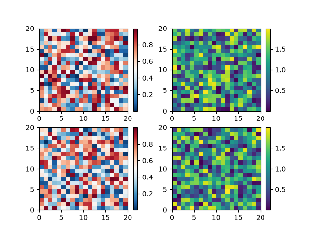
The first column has the same type of data in both rows, so it may be
desirable to have just one colorbar. We do this by passing Figure.colorbar
a list of Axes with the ax kwarg.
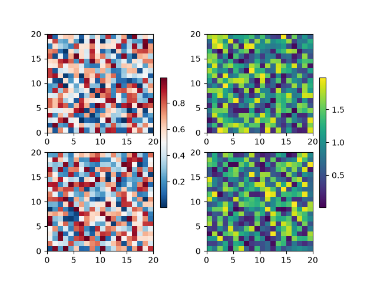
The stolen space can lead to Axes in the same subplot layout being different sizes, which is often undesired if the the x-axis on each plot is meant to be comparable as in the following:
fig, axs = plt.subplots(2, 1, figsize=(4, 5), sharex=True)
X = np.random.randn(20, 20)
axs[0].plot(np.sum(X, axis=0))
pcm = axs[1].pcolormesh(X)
fig.colorbar(pcm, ax=axs[1], shrink=0.6)
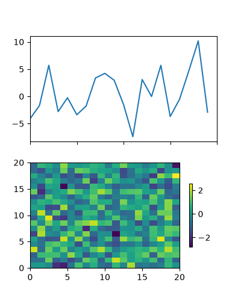
This is usually undesired, and can be worked around in various ways, e.g. adding a colorbar to the other Axes and then removing it. However, the most straightforward is to use constrained layout:
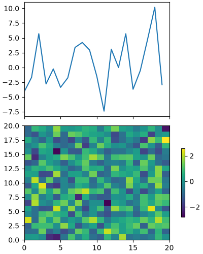
Relatively complicated colorbar layouts are possible using this
paradigm. Note that this example works far better with
layout='constrained'
fig, axs = plt.subplots(3, 3, layout='constrained')
for ax in axs.flat:
pcm = ax.pcolormesh(np.random.random((20, 20)))
fig.colorbar(pcm, ax=axs[0, :2], shrink=0.6, location='bottom')
fig.colorbar(pcm, ax=[axs[0, 2]], location='bottom')
fig.colorbar(pcm, ax=axs[1:, :], location='right', shrink=0.6)
fig.colorbar(pcm, ax=[axs[2, 1]], location='left')
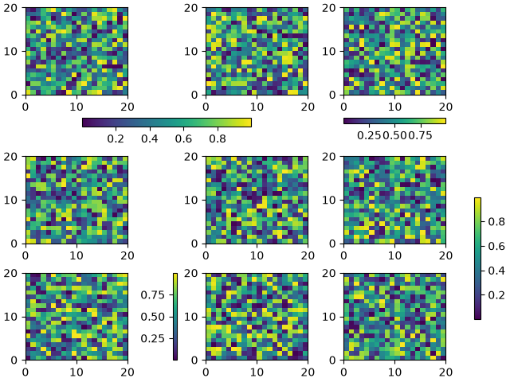
Adjusting the spacing between colorbars and parent Axes#
The distance a colorbar is from the parent Axes can be adjusted with the pad keyword argument. This is in units of fraction of the parent Axes width, and the default for a vertical Axes is 0.05 (or 0.15 for a horizontal Axes).
fig, axs = plt.subplots(3, 1, layout='constrained', figsize=(5, 5))
for ax, pad in zip(axs, [0.025, 0.05, 0.1]):
pcm = ax.pcolormesh(np.random.randn(20, 20), cmap='viridis')
fig.colorbar(pcm, ax=ax, pad=pad, label=f'pad: {pad}')
fig.suptitle("layout='constrained'")
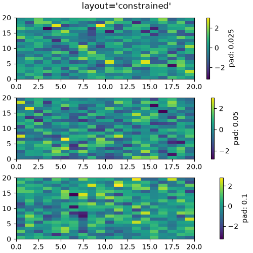
Note that if you do not use constrained layout, the pad command makes the parent Axes shrink:
fig, axs = plt.subplots(3, 1, figsize=(5, 5))
for ax, pad in zip(axs, [0.025, 0.05, 0.1]):
pcm = ax.pcolormesh(np.random.randn(20, 20), cmap='viridis')
fig.colorbar(pcm, ax=ax, pad=pad, label=f'pad: {pad}')
fig.suptitle("No layout manager")
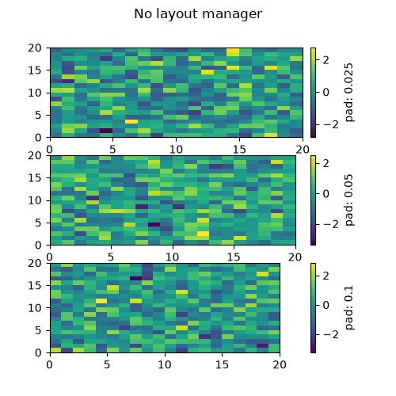
Manual placement of colorbars#
Sometimes the automatic placement provided by colorbar does not
give the desired effect. We can manually create an Axes and tell
colorbar to use that Axes by passing the Axes to the cax keyword
argument.
Using inset_axes#
We can manually create any type of Axes for the colorbar to use, but an
Axes.inset_axes is useful because it is a child of the parent Axes and can
be positioned relative to the parent. Here we add a colorbar centered near
the bottom of the parent Axes.
fig, ax = plt.subplots(layout='constrained', figsize=(4, 4))
pcm = ax.pcolormesh(np.random.randn(20, 20), cmap='viridis')
ax.set_ylim([-4, 20])
cax = ax.inset_axes([0.3, 0.07, 0.4, 0.04])
fig.colorbar(pcm, cax=cax, orientation='horizontal')
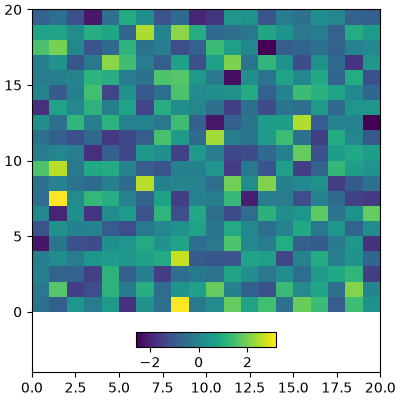
Axes.inset_axes can also specify its position in data coordinates
using the transform keyword argument if you want your Axes at a
certain data position on the graph:
fig, ax = plt.subplots(layout='constrained', figsize=(4, 4))
pcm = ax.pcolormesh(np.random.randn(20, 20), cmap='viridis')
ax.set_ylim([-4, 20])
cax = ax.inset_axes([7.5, -1.7, 5, 1.2], transform=ax.transData)
fig.colorbar(pcm, cax=cax, orientation='horizontal')
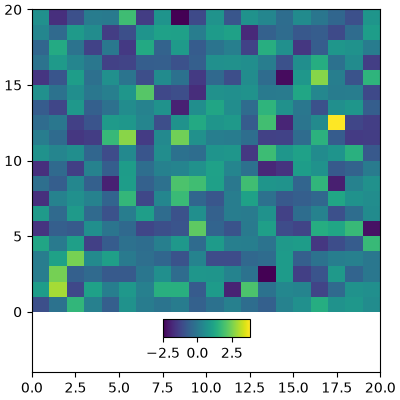
Colorbars attached to fixed-aspect-ratio Axes#
Axes with a fixed aspect ratio may shrink in height to preserve the aspect ratio of the underlying data. This can result in the colorbar becoming taller than the associated Axes, as demonstrated in the following example.
fig, ax = plt.subplots(layout='constrained', figsize=(4, 4))
pcm = ax.imshow(np.random.randn(10, 10), cmap='viridis')
fig.colorbar(pcm, ax=ax)
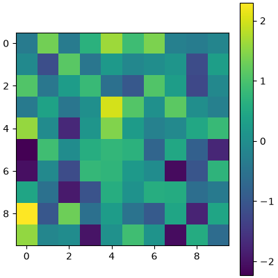
To automatically adjust the colorbar size to match the parent Axes, we can
use layout='compressed'. This ensures that as the figure is resized or
the fixed-aspect-ratio Axes is zoomed in or out, the colorbar dynamically
resizes to align with the parent Axes.
fig, ax = plt.subplots(layout='compressed', figsize=(4, 4))
pcm = ax.imshow(np.random.randn(10, 10), cmap='viridis')
ax.set_title("Colorbar with layout='compressed'", fontsize='medium')
fig.colorbar(pcm, ax=ax)
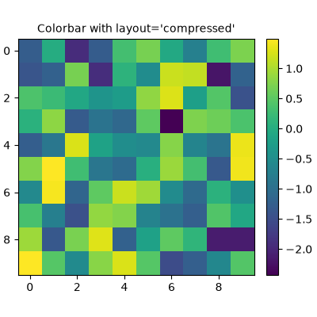
Alternatively, we can manually position the colorbar using Axes.inset_axes
with axes-relative coordinates. This approach provides precise control over
the colorbar's placement. However, without a layout engine, the colorbar
might be clipped if it extends beyond the figure boundaries.
fig, ax = plt.subplots(layout='constrained', figsize=(4, 4))
pcm = ax.imshow(np.random.randn(10, 10), cmap='viridis')
cax = ax.inset_axes([1.04, 0.0, 0.05, 1.0]) # Positioning the colorbar
ax.set_title('Colorbar with inset_axes', fontsize='medium')
fig.colorbar(pcm, cax=cax)
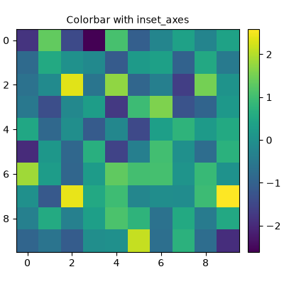
We can also do this manually using an Axes.inset_axes using axes-relative
coordinates (see Transformations Tutorial). Note that if we do not use a
layout engine, the colorbar will be clipped off the right side of the figure.
fig, ax = plt.subplots(layout='constrained', figsize=(4, 4))
pcm = ax.imshow(np.random.randn(10, 10), cmap='viridis')
cax = ax.inset_axes([1.04, 0.0, 0.05, 1.0])
ax.set_title('Colorbar with inset_axes', fontsize='medium')
fig.colorbar(pcm, cax=cax)
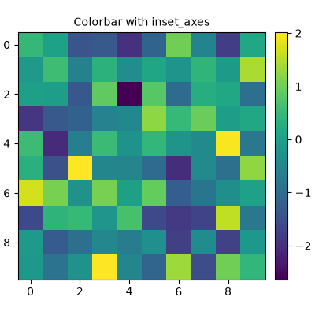
See also
The axes_grid1 toolkit has methods for manually creating colorbar Axes as well:
Total running time of the script: (0 minutes 6.959 seconds)